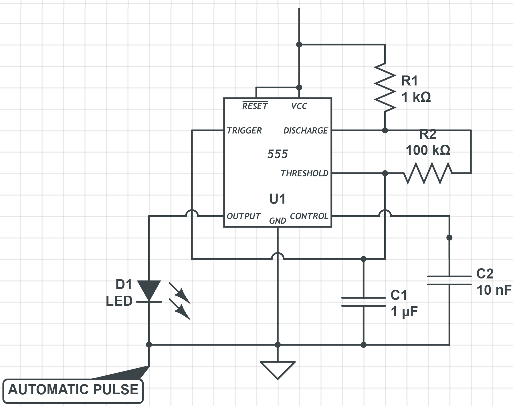
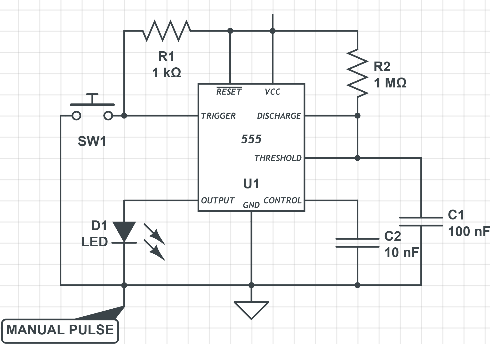
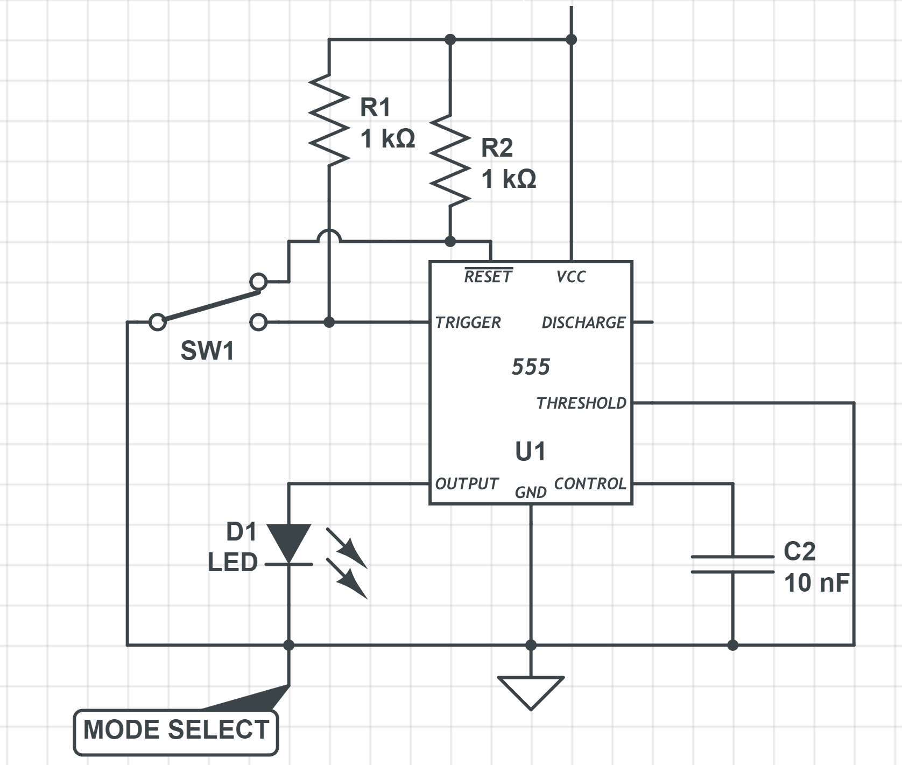

Clock Module
555 Timer is used as oscilator for pulse generation of 50% duty cycle. Alternative timer circuits w/ crystal may also be used.
Timer IC has a wide voltage range, the same isn't applicable with logic gate ICs. 5V DC is supplied in parallel to the breadboard.
Astable Multivibrator
The Astable Multivibrator is another type of cross-coupled transistor switching circuit that has NO stable output states as it changes from one state to the other all the time.
 back to topMonostable Multivibrator
The Monostable 555 Timer circuit triggers on a negative-going pulse applied to pin 2 and this trigger pulse must be much shorter than the output pulse width allowing time for the timing capacitor to charge and then discharge fully. Once triggered, the 555 Monostable will remain in this “HIGH” unstable output state until the time period set up by the Resistor and Capacitor in the network has elapsed.
 back to topBistable Mode
This 555 timer circuit will remain in either state indefinitely and is therefore bistable. Then the Bistable 555 timer is stable in both states, “HIGH” and “LOW”. The threshold input (pin 6) is connected to ground to ensure that it cannot reset the bistable circuit as it would in a normal timing application.
 back to topClock Multiplex Logic
Multiplex logic using Logic gates to multiplex two different mode of the clock pulse into a single output line.
| Label | Description |
|---|---|
| MANUAL | Manual pulse signal from Monostable Multivibrator. |
| AUTO | Mode Select between two different pulse mode. |
| CLOCK | Automatic pulse signal from Astable Multivibrator. |
| HALT | Halt Signal, stops the clock, Active LOW. |
back to top